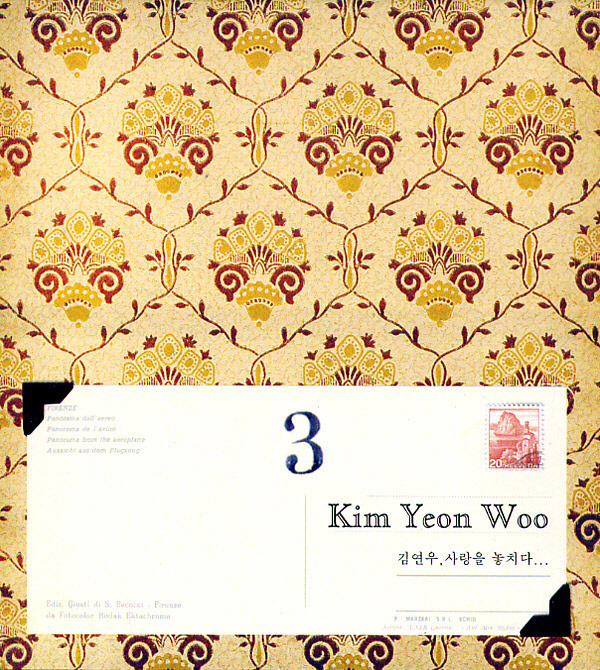

안녕하세요, 라보엠입니다.
오늘은 발라드의 명품 보컬 김연우의 대표곡, ‘사랑한다는 흔한 말’을 소개해드리겠습니다. 이 곡은 2006년 1월 발매된 정규 3집 앨범 ‘사랑을 놓치다’의 타이틀곡이자, 동명의 영화 OST로도 많은 사랑을 받았습니다. 조규만이 작곡하고 이승민이 작사한 이 곡은 이별의 아픔과 후회, 그리고 미처 전하지 못한 진심을 담담하게 풀어내며, 김연우 특유의 섬세한 감성으로 많은 사람들의 마음을 울린 곡입니다.

김연우 특유의 감성, 그리고 음악적 완성도
김연우의 ‘사랑한다는 흔한 말’은 절제된 멜로디와 서정적인 피아노, 그리고 점차 고조되는 스트링 편곡이 어우러져, 곡의 감정선을 자연스럽게 끌어올립니다. 특히 후반부로 갈수록 쏟아지는 감정의 폭발, 그리고 다시금 찾아오는 담담한 마무리는 듣는 이에게 깊은 여운을 남깁니다. 김연우는 이 곡에서 특유의 깨끗하고 섬세한 고음, 그리고 감정을 절제하면서도 깊이 있게 표현하는 보컬로, 발라드의 정석을 보여줍니다.
‘사랑한다는 흔한 말’은 영화 ‘사랑을 놓치다’의 OST로도 삽입되어, 극 중 인물들의 감정선을 더욱 극대화합니다. 영화의 서정적인 분위기와 김연우의 애절한 목소리가 어우러지며, 곡의 감동이 배가됩니다. 이 곡을 들으면 누구나 한 번쯤 지나온 사랑과 이별, 그리고 미처 전하지 못한 진심을 떠올리게 됩니다.
노래의 시작, 담담한 고백
‘사랑한다는 흔한 말’은 이별을 받아들이지 못한 채, 아직도 믿기 힘든 현실 앞에서 시작됩니다.
“끝이란 헤어짐이 내겐 낯설어 아직까지 난 믿을 수 없는데 마치 거짓말인 것처럼”
이 첫 소절은, 누구나 한 번쯤 겪어봤을 이별의 당혹스러움과 허탈함을 고스란히 담아냅니다.
노래는 상대방이 힘든 내색조차 하지 않아 아무것도 몰랐던 자신을 돌아보며, 그저 함께하는 시간만으로도 충분히 행복했던 순간들을 되새깁니다.
사랑한다는 흔한 말 노래 가사
끝이란 헤어짐이 내겐 낯설어
아직까지 난 믿을 수 없는데, 마치 거짓말인 것처럼
힘들단 내색조차 너는 없어서
아무것도 난 몰랐어
한동안 그저 좋은 줄만 알았어
하루만 나 지우면 되니
잠시만 나 네 눈 앞에서 멀어지면, 토라진 맘 풀릴 수 있니?
사랑한다는 흔한 말 한번도 해주지 못해서
혼자 서운한 마음에 지쳐서 숨어버렸니?
심장이 멎을 듯 아파
너 없이 난 살 수 없을 것 같아
정말 미안해, 내가 더 잘할게
가끔씩 네 생각에 목이 메여와
바보 같이, 늘 너만은 내 곁에 있을 거라 생각했나봐
한번 더 날 봐줄 수 없니?
모르는 척 네 곁에 먼저 다가가면
태연한 척 해줄 수 없니?
사랑한다는 흔한 말 한번도 해주지 못해서
혼자 서운한 마음에 지쳐서 숨어버렸니?
심장이 멎을 듯 아파
너 없이 난 살 수 없을 것 같아
정말 미안해, 내가 더 잘할게
두려워 네가 떠날까봐
이 곡의 핵심은 바로 “사랑한다는 흔한 말, 한 번도 해주지 못해서 혼자 서운한 마음에 지쳐서 숨어버렸니”라는 후렴구에 담겨 있습니다. 평소에 너무 익숙해서, 혹은 쑥스러워서 쉽게 하지 못했던 말.
이별 후에야 비로소 그 말의 소중함을 깨닫고, 미안함과 후회가 뒤섞인 감정이 밀려옵니다.
“심장이 멎을 듯 아파, 너 없이 난 살 수 없을 것 같아 정말 미안해 내가 더 잘할게”
김연우의 담백하면서도 호소력 짙은 목소리는, 이 가사의 진심을 더욱 깊이 있게 전달합니다.
비오는 날 한양대 캠퍼스에서의 라이브
비오는 날 엄청난 성량의 라이브로 커뮤니티 등에서 화제가 된 적이 있습니다.
맺음말
김연우의 ‘사랑한다는 흔한 말’은 이별의 순간에 느끼는 후회와 미련, 그리고 사랑의 소중함을 다시금 일깨워주는 곡입니다.
쉽게 꺼내지 못했던 말 한마디가 얼마나 큰 의미였는지, 노래를 듣는 내내 마음 한켠이 먹먹해집니다.
오늘 하루, 이 곡과 함께 소중한 사람에게 진심을 전해보는 건 어떨까요?
김연우의 목소리와 함께라면, 그 어떤 감정도 조금 더 솔직하게 마주할 수 있을 것 같습니다.